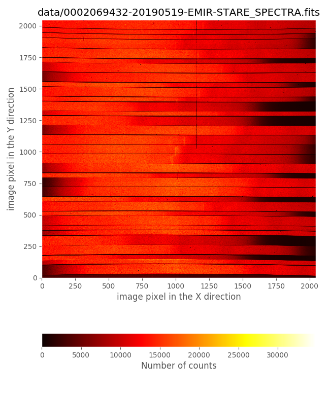
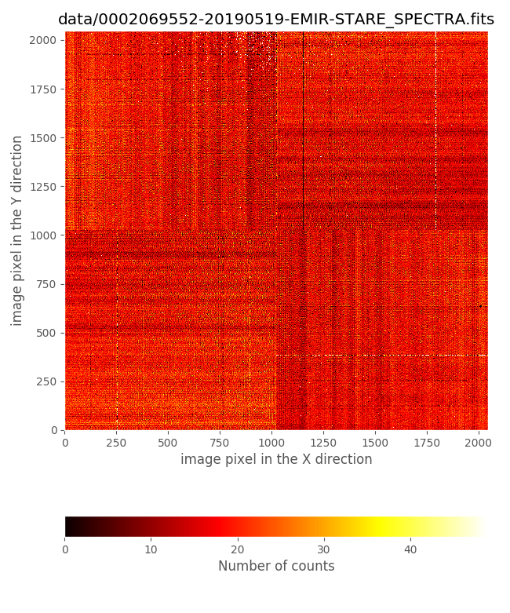
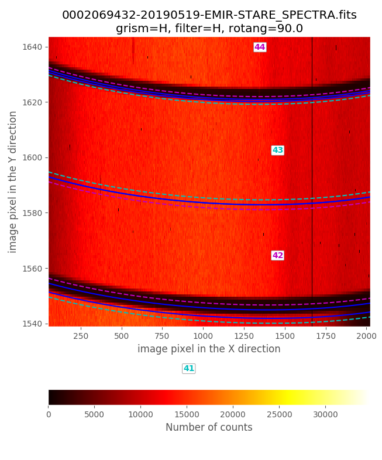

Flatfield generation
Warning
All the commands are assumed to be executed in a terminal running the bash shell (or a compatible one).
Don’t forget to activate the same Python environment employed to install
PyEmir. In this document, the prompt (emir) $ will indicate that this
is the case.
This example provides an easy introduction to the generation of flatfield images with PyEmir (via Numina),
For detailed documentation concerning the installation of PyEmir, see PyEmir Installation.
Pixel-to-pixel variation
Concerning pixel-to-pixel variation, in principle PyEmir distinguishes between:
Imaging flatfield: identified as
MasterIntensityFlatin the filecontrol.yaml. This should be set to the flatfield to be applied when reducing data obtained in imaging mode: for example, when using the recipeSTARE_IMAGEwhen performing the basic initial reduction of the images.Spectroscopic flatfield: identified as
MasterSpectralFaltin the filecontrol.yaml. This should be set to the flatfield to be applied when reducing data obtained in spectroscopic mode: for example, when using the recipeGENERATE_RECTWV_COEFFto generate the rectification and wavelength calibration coefficients, or the recipeABBA_SPECTRA_RECTWVto combine dithered spectroscopic observations following an ABBA pattern.
A master pixel-to-pixel flatfield from spectroscopic data,
master_flat_spec.fits, is provided in the initial file tree structure
provided in Initial file tree. Interestingly, as shown in that section,
the pixel-to-pixel variation is quite constant along the different spectral
ranges. For that reason we consider that this image can safely be used for most
purposes for both, imaging and spectroscopic observations.
Furthermore, imaging mode observations, as those described in
Imaging mode tutorial: combination of dithered exposures, are reduced by generating a superflatfield from the
sky signal in different images. In this sense, the use of a pixel-to-pixel
flatfield in the initial basic reduction of the original images is not
essential. The user can easily check this by setting MasterIntensityFlat to
master_flat_ones.fits in the control.yaml file, i.e.:
- {id: 4, type: 'MasterIntensityFlat', tags: {}, content: 'master_flat_ones.fits'}
Note that master_flat_ones.fits is a dummy image in which all the pixels
have been set to 1.0.
Generating a pixel-to-pixel flatfield from spectroscopic data
If for any reason the user needs to compute her own pixel-to-pixel flatfield
from spectroscopic data, PyEmir provides the reduction recipe
SPEC_FLAT_PIX2PIX that perform this task using, as input, tungsten
exposures. In this sense, it is important to keep in mind the following
recommendations:
The exposures should be obtained with the same MOS configuration as the scientific images to which we plan to apply the computed flatfiled; otherwise, the pixel-to-pixel reponse may not be available in the wavelength range covered by each particular slitlet.
For observations covering the K band it is advisable to obtain images with the tungsten lamp both ON and OFF, since in this case the OFF images exhibit a non-negligible signal.
Here we illustrate the computation of a spectroscopic pixel-to-pixel flatfield using the following 20 tungsten lamp exposures in the H band, 10 obtained with the lamp ON and 10 with the lamp OFF. Although in principle it is not necessary to obtain images with lamp OFF in this spectral range, here we will use both kind of input images to illustrate the general procedure, as well as to double check that the lamp OFF signal in this case is negligible.
0002069432-20190519-EMIR-STARE_SPECTRA.fits
0002069435-20190519-EMIR-STARE_SPECTRA.fits
0002069438-20190519-EMIR-STARE_SPECTRA.fits
0002069441-20190519-EMIR-STARE_SPECTRA.fits
0002069444-20190519-EMIR-STARE_SPECTRA.fits
0002069447-20190519-EMIR-STARE_SPECTRA.fits
0002069450-20190519-EMIR-STARE_SPECTRA.fits
0002069453-20190519-EMIR-STARE_SPECTRA.fits
0002069456-20190519-EMIR-STARE_SPECTRA.fits
0002069459-20190519-EMIR-STARE_SPECTRA.fits
0002069552-20190519-EMIR-STARE_SPECTRA.fits
0002069555-20190519-EMIR-STARE_SPECTRA.fits
0002069558-20190519-EMIR-STARE_SPECTRA.fits
0002069561-20190519-EMIR-STARE_SPECTRA.fits
0002069564-20190519-EMIR-STARE_SPECTRA.fits
0002069567-20190519-EMIR-STARE_SPECTRA.fits
0002069570-20190519-EMIR-STARE_SPECTRA.fits
0002069573-20190519-EMIR-STARE_SPECTRA.fits
0002069576-20190519-EMIR-STARE_SPECTRA.fits
0002069579-20190519-EMIR-STARE_SPECTRA.fits
Those files (together with some additional files that you will need to follow this imaging example) are available as a compressed tgz file: pyemir_flatpix2pix_tutorial_v1.tgz.
Warning
Before continuing, make sure that you have already initialize the file tree structure by following the instructions provided in the Initial file tree section of this documentation.
Move to the directory where you have deployed the initial file tree structure containing the basic PyEmir calibration files (see Initial file tree).
Decompress there the previously mentioned tgz file:
(emir) $ tar zxvf pyemir_flatpix2pix_tutorial_v1.tgz
...
...
(emir) $ rm pyemir_flatpix2pix_tutorial_v1.tgz
This action should have populated the file tree with the
20 tungsten FITS images (placed wihtin the data
subdirectory) and some additional auxiliary files:
(emir) $ tree
.
├── control.yaml
├── data
│ ├── 0002069432-20190519-EMIR-STARE_SPECTRA.fits
│ ├── 0002069435-20190519-EMIR-STARE_SPECTRA.fits
│ ├── 0002069438-20190519-EMIR-STARE_SPECTRA.fits
│ ├── 0002069441-20190519-EMIR-STARE_SPECTRA.fits
│ ├── 0002069444-20190519-EMIR-STARE_SPECTRA.fits
│ ├── 0002069447-20190519-EMIR-STARE_SPECTRA.fits
│ ├── 0002069450-20190519-EMIR-STARE_SPECTRA.fits
│ ├── 0002069453-20190519-EMIR-STARE_SPECTRA.fits
│ ├── 0002069456-20190519-EMIR-STARE_SPECTRA.fits
│ ├── 0002069459-20190519-EMIR-STARE_SPECTRA.fits
│ ├── 0002069552-20190519-EMIR-STARE_SPECTRA.fits
│ ├── 0002069555-20190519-EMIR-STARE_SPECTRA.fits
│ ├── 0002069558-20190519-EMIR-STARE_SPECTRA.fits
│ ├── 0002069561-20190519-EMIR-STARE_SPECTRA.fits
│ ├── 0002069564-20190519-EMIR-STARE_SPECTRA.fits
│ ├── 0002069567-20190519-EMIR-STARE_SPECTRA.fits
│ ├── 0002069570-20190519-EMIR-STARE_SPECTRA.fits
│ ├── 0002069573-20190519-EMIR-STARE_SPECTRA.fits
│ ├── 0002069576-20190519-EMIR-STARE_SPECTRA.fits
│ ├── 0002069579-20190519-EMIR-STARE_SPECTRA.fits
│ ├── master_bpm.fits
│ ├── master_dark_zeros.fits
│ ├── master_flat_ones.fits
│ ├── master_flat_spec.fits
│ ├── rect_wpoly_MOSlibrary_grism_H_filter_H.json
│ ├── rect_wpoly_MOSlibrary_grism_J_filter_J.json
│ ├── rect_wpoly_MOSlibrary_grism_K_filter_Ksp.json
│ ├── rect_wpoly_MOSlibrary_grism_LR_filter_HK.json
│ └── rect_wpoly_MOSlibrary_grism_LR_filter_YJ.json
└── flatpix2pix.yaml
You can easily examine the header of the scientific FITS images using the
astropy utility fitsheader:
(emir) $ fitsheader data/0002069*.fits -k object -k lampincd -k lampintn -f
filename OBJECT LAMPINCD LAMPINTN
------------------------------------------------ ------------- -------- ----------------
data/0002069432-20190519-EMIR-STARE_SPECTRA.fits Goya Mask1b H 1 8.99973011016846
data/0002069435-20190519-EMIR-STARE_SPECTRA.fits Goya Mask1b H 1 8.99973011016846
data/0002069438-20190519-EMIR-STARE_SPECTRA.fits Goya Mask1b H 1 8.99973011016846
data/0002069441-20190519-EMIR-STARE_SPECTRA.fits Goya Mask1b H 1 8.99973011016846
data/0002069444-20190519-EMIR-STARE_SPECTRA.fits Goya Mask1b H 1 8.99973011016846
data/0002069447-20190519-EMIR-STARE_SPECTRA.fits Goya Mask1b H 1 8.99973011016846
data/0002069450-20190519-EMIR-STARE_SPECTRA.fits Goya Mask1b H 1 8.99973011016846
data/0002069453-20190519-EMIR-STARE_SPECTRA.fits Goya Mask1b H 1 8.99973011016846
data/0002069456-20190519-EMIR-STARE_SPECTRA.fits Goya Mask1b H 1 8.99973011016846
data/0002069459-20190519-EMIR-STARE_SPECTRA.fits Goya Mask1b H 1 8.99973011016846
data/0002069552-20190519-EMIR-STARE_SPECTRA.fits Goya Mask1b H 0 0.0
data/0002069555-20190519-EMIR-STARE_SPECTRA.fits Goya Mask1b H 0 0.0
data/0002069558-20190519-EMIR-STARE_SPECTRA.fits Goya Mask1b H 0 0.0
data/0002069561-20190519-EMIR-STARE_SPECTRA.fits Goya Mask1b H 0 0.0
data/0002069564-20190519-EMIR-STARE_SPECTRA.fits Goya Mask1b H 0 0.0
data/0002069567-20190519-EMIR-STARE_SPECTRA.fits Goya Mask1b H 0 0.0
data/0002069570-20190519-EMIR-STARE_SPECTRA.fits Goya Mask1b H 0 0.0
data/0002069573-20190519-EMIR-STARE_SPECTRA.fits Goya Mask1b H 0 0.0
data/0002069576-20190519-EMIR-STARE_SPECTRA.fits Goya Mask1b H 0 0.0
data/0002069579-20190519-EMIR-STARE_SPECTRA.fits Goya Mask1b H 0 0.0
The value of the following keywords provide the required information to know what type of images we are handling:
LAMPINCD: tungsten lamp status (1=ON, 0=OFF)LAMPINTN: tungsten lamp intensity
It is clear that the first 10 images of this sequence correspond to lamp ON and the last 10 images to lamp OFF.
Let’s have a look to the CSU configuration:
(emir) $ pyemir-display_slitlet_arrangement data/0002069432-20190519-EMIR-STARE_SPECTRA.fits \
--longslits --n_clusters 2
{kind=link}
{kind=link}
The previous histogram indicates that the valid slitlet widths for the present CSU configuration are given by:
minimum_slitlet_width_mm: 1.5maximum_slitlet_width_mm: 2.5
We can also display the first image with lamp ON and the first with lamp OFF:
 {kind=link}
{kind=link}
An estimate of the integer vertical offset (in pixels) can be obtained using:
$ pyemir-overplot_boundary_model data/0002069432-20190519-EMIR-STARE_SPECTRA.fits \
--rect_wpoly_MOSlibrary data/rect_wpoly_MOSlibrary_grism_H_filter_H.json
{kind=link}
Zooming in the previous image:
{kind=link}
From this examination we estimate global_integer_offset_y_pix: -2. Note
that to obtain the pixel-to-pixel response we do not need to estimate
global_integer_offset_x_pix. The reason for that is that the recipe
responsible for the computation of this kind of flat, SPEC_FLAT_PIX2PIX,
only needs to rectify the spectra of each slitlet without performing a
wavelength calibration. The averaged rectified spectrum of each slitlet is then
smoothed and unrectified (i.e., distorted to follow the original image
distortions) to obtain the pixel-to-pixel variation (dividing the original
image by the smoothed distorted spectra).
The required observation result file to reduce these lamp images,
flatpix2pix.yaml, is already provided in the tgz accompanying this example
data:
1id: _flat
2instrument: EMIR
3mode: SPEC_FLAT_PIX2PIX
4frames:
5 - 0002069432-20190519-EMIR-STARE_SPECTRA.fits
6 - 0002069435-20190519-EMIR-STARE_SPECTRA.fits
7 - 0002069438-20190519-EMIR-STARE_SPECTRA.fits
8 - 0002069441-20190519-EMIR-STARE_SPECTRA.fits
9 - 0002069444-20190519-EMIR-STARE_SPECTRA.fits
10 - 0002069447-20190519-EMIR-STARE_SPECTRA.fits
11 - 0002069450-20190519-EMIR-STARE_SPECTRA.fits
12 - 0002069453-20190519-EMIR-STARE_SPECTRA.fits
13 - 0002069456-20190519-EMIR-STARE_SPECTRA.fits
14 - 0002069459-20190519-EMIR-STARE_SPECTRA.fits
15 - 0002069552-20190519-EMIR-STARE_SPECTRA.fits
16 - 0002069555-20190519-EMIR-STARE_SPECTRA.fits
17 - 0002069558-20190519-EMIR-STARE_SPECTRA.fits
18 - 0002069561-20190519-EMIR-STARE_SPECTRA.fits
19 - 0002069564-20190519-EMIR-STARE_SPECTRA.fits
20 - 0002069567-20190519-EMIR-STARE_SPECTRA.fits
21 - 0002069570-20190519-EMIR-STARE_SPECTRA.fits
22 - 0002069573-20190519-EMIR-STARE_SPECTRA.fits
23 - 0002069576-20190519-EMIR-STARE_SPECTRA.fits
24 - 0002069579-20190519-EMIR-STARE_SPECTRA.fits
25requirements:
26 method: sigmaclip
27 method_kwargs:
28 low: 3.0
29 high: 3.0
30 minimum_slitlet_width_mm: 1.5
31 maximum_slitlet_width_mm: 2.5
32 global_integer_offset_x_pix: 0
33 global_integer_offset_y_pix: -2
34 nwindow_median: 5
35 minimum_fraction: 0.01
36 minimum_value_in_output: 0.01
37 maximum_value_in_output: 10.0
38enabled: True
Note that the frames section of this file contains the list of the 20
tungsten lamp images, independently of whether the images were obtained with
the lamp ON or OFF (the order of the images here is not relevant; the recipe
examines the value of the keyword LAMPINCD to determine which images
correspond to each lamp status).
The requeriments section includes some parameters already employed in other
reduction recipes (like the combination method, the width interval for valid
slitlets, or the integer offsets between the images and the empirical
distortion calibration), and some new parameters:
nwindow_median: 5is the numbers of pixels employed to smooth (via median filtering in the spectral direction) the averaged rectified spectrum of each slitlet before unrectifying it.mininum_fraction: 0.01is the minimum fraction of the maximum signal of the tungsten lamp that is employed to estimate the pixel-to-pixel response. Pixel values below this limit are receiving a very low illumination and the pixel-to-pixel response is highly uncertain.minimum_value_in_output: 0.01andmaximum_value_in_output: 10are the minimum and maximum pixel-to-pixel value allowed in the generated flatfield. This truncation avoids having undesired divisions by too small or too large numbers (typically spurious estimates computed at the frontiers between slitlets that are not aligned forming a pseudo longslit).
In principle, the default values for these last parameters seem to work properly for all combinations of grism+filter.
You can now execute the reduction recipe:
(emir) $ numina run flatpix2pix.yaml --link-files -r control.yaml
...
...
The resulting pixel-to-pixel flatfield can be found in the corresponding
results subdirectory:
(emir) $ numina-ximshow obsid_flat_results/reduced_flatpix2pix.fits
{kind=link}
It is very illustrative to compare the derived flatfield with the file
master_flat_spec.fits, provided in the initial PyEmir tree. Let’s have a
look to that comparison in a small image region:
{kind=link}
This comparison reveals that the flatfield just computed exhibits:
gaps in the regions around the frontiers between slitlets
defects due to the presence of some ghosts produced by zero order images of the slitlets themselves
On the contrary, the file master_flat_spec.fits, which has been built from
observations of 2000 pairs of tungten lamp ON - OFF with the CSU configured
simulating longslits at different locations in the spectral direction, does not
show these problems: the longslit configurations avoid the dark gaps in the
frontiers between slitlets (that appear when consecutive slitlets are not
perfectly aligned), and the ghost problems are avoided by combining the
information of images that do not exhibit these ghots at the central detector
region. For all those reasons we suggest the use of master_flat_spec.fits
unless you have a good reason for not doing it.